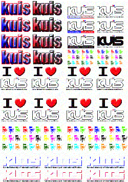

| ステッカー | |
|
クリア１枚￥350 （A4サイズの半分で一枚分となります） アンクリア１枚￥250 |
|
 |
|
|  | |
|
「ゆっくり急げ」とは、
浜風祭当時の学長、石井米雄先生のお言葉です。 その他、「I love Kuis」など人気デザインを取り入れました。 浜風祭ではデザインの組み換えが自由にでき、列ができました。
design:Hidemasa Yasuda
Sintaro Yarimizo |
|